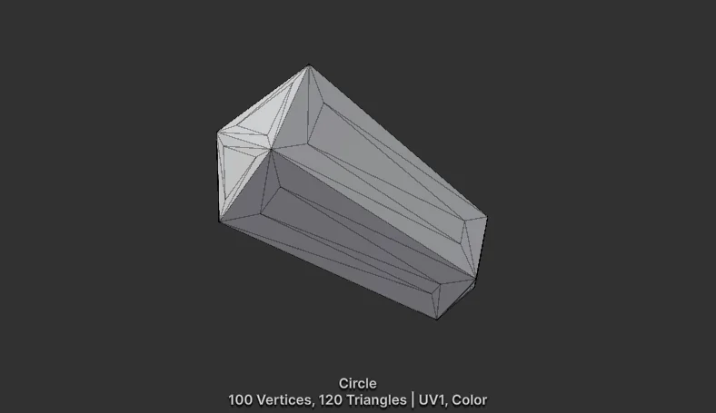
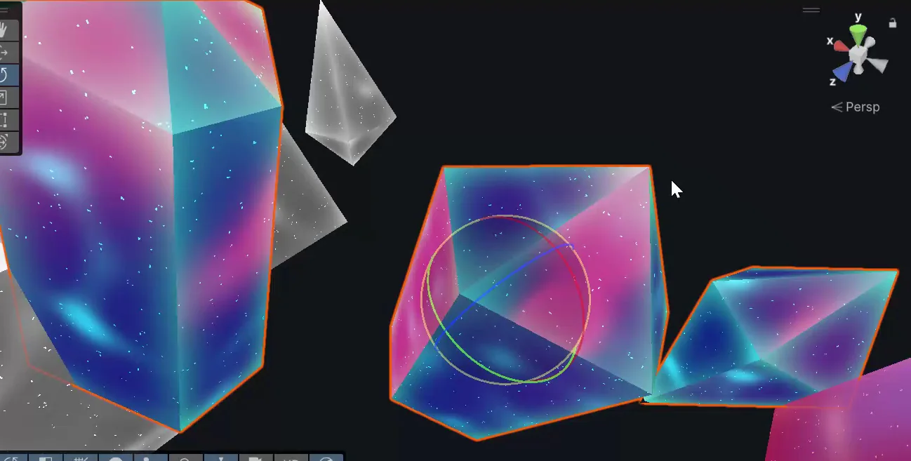
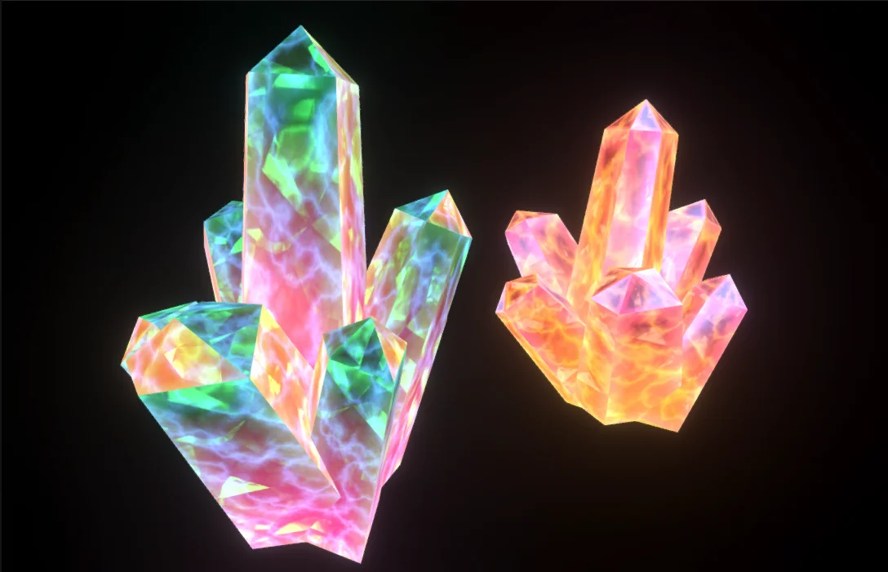

At Highstreet, the VR metaverse I worked on as a Unity engineer and technical artist, the world had crystals and minerals that grew out of the ground. They needed to look precious, almost magical, and they needed to be cheap, because they had to sit in a VR scene with everything else and still hold the frame rate. Real refraction was out of the question. So I built a shader that fakes it: a crystal that looks like it has depth, glowing edges and something sparkling inside, all from a simple mesh and a handful of textures.
What I was after
Good crystals read in three ways at once. Their edges catch the light, so the shape is crisp even from a distance. They look deep, as if you can see into them. And they have life inside: little flecks and colour shifts that move as you walk around them. I wanted all three without transparency sorting headaches or expensive passes, so the shader is unlit, opaque, and does almost all of its thinking with textures and UV tricks.
Letting the mesh carry the edges
The first trick isn't in the shader at all, it's in the model. Each crystal is a very light mesh: the demo piece is just 100 vertices and 120 triangles. I inset each face slightly, which gives every face a thin outer ring of geometry around a central panel. Then I paint those outer rings with vertex colour. Now the shader knows exactly where the edges are without any edge detection at all: it just reads the colour.

I use the red channel for the edges and the green channel for a glowing core. Inside the shader, the edge colour also changes with the viewing angle: a fresnel term blends between one colour for edges facing you and another for edges turning away, so the outline shifts as the crystal rotates.
// vertex colour is painted on the mesh: R = outer edge ring, G = core
float edgeMask = vertexColor.r;
float coreMask = vertexColor.g;
// edges change colour with the viewing angle
float facing = fresnel(normal, viewDir, 1.0);
float3 edgeColor = lerp(edgeFacingColor, edgeNonFacingColor, facing) * edgeMask;
float3 coreGlow = coreColorHDR * coreMask;The first version
The first pass was very basic: mostly colour and those painted edges, with only a hint of depth. It already read as a crystal at a glance, which told me the inset trick was worth it. Up close, though, it looked like what it was, a coloured surface.
Faking depth with parallax
Depth comes from parallax. Instead of reading a texture at the surface's own UVs, I push the UVs along the view direction. A layer shifted this way slides across the surface as you move, exactly as something sitting further inside the crystal would. The main inner texture is offset like this, and its value picks between a dark and a bright colour, which gives the cloudy, caustic-looking pattern inside.
// a layer "inside" the crystal: shift its UVs along the view direction
float2 innerUV = uv * innerScale + viewDir.xy * parallaxStrength;
float pattern = sample(parallaxTex, innerUV).r;
float3 innerColor = lerp(innerDarkColor, innerBrightColor, pattern);One layer gives depth, but two more give life. I added two sparkle layers that use the same idea with their own scale and their own amount of shift. Because each one moves at a different rate, they separate as you look around the crystal, and the inside starts to feel like a real volume with things suspended at different depths.
// two sparkle layers, each with its own scale and depth
float2 sparkUV_A = uv * sparkA.scale + viewDir.xy * sparkA.shift;
float2 sparkUV_B = uv * sparkB.scale + viewDir.xy * sparkB.shift;
float3 sparkle = (sample(sparkleTex, sparkUV_A) + sample(sparkleTex, sparkUV_B)).rgb
* sparkleColor;
For the surface sheen, I reflect the view direction off the normal and use that to look up an environment texture, tinted by a reflection colour. That's where much of the shifting, iridescent colour comes from as the crystal turns.
// fake reflection: look up an environment texture with the reflected view
float2 reflUV = reflect(viewDir, normal).xy * reflectionAmount;
float3 reflection = sample(environmentTex, reflUV).rgb * reflectionColor;A detail I'm quite happy with: all of these shifted UVs are worked out per vertex, not per pixel. The vertex stage packs them into a couple of spare interpolators, the GPU blends them across each face for free, and the pixel shader just samples. On low-poly crystals that saves a lot of maths for very little visual difference.
Putting it together
The final colour is simply everything added up: the inner pattern, the angle-dependent edges, the reflection, the sparkles and the core glow. Scene fog is then blended on top, so crystals in the distance sit in the world like everything else.
float3 color = innerColor + edgeColor + reflection + sparkle + coreGlow;
color = lerp(color, fogColor, fogDensity);Growing out of the ground
The crystals also needed to grow, so the shader has a dissolve built in. It uses a second UV set: a noise pattern on top of a gradient running up the crystal. A single amount slider sweeps a cut-off through that mask, clipping away what hasn't grown yet, and a thin band just ahead of the cut glows in its own colour. Animate the slider and the crystal grows upwards with a bright, crackling edge.
// growth / dissolve along the second UV set
float mask = noise(uv2, dissolveScale) * (1.0 - uv2.y);
float cutoff = remap(dissolveAmount, 0, 1, -0.2, 0.7);
alpha = 1.0 - step(mask, cutoff); // clipped below the threshold
emission = step(mask, cutoff + dissolveWidth) * dissolveColor; // glowing growth edgeThe final look
With every layer in place, the crystals look deep and alive while staying a cheap, opaque, unlit material on a tiny mesh. Each cluster can take its own colours, so the same shader gives pink, green and warm orange crystals just by changing a few values.

What I enjoyed most about this one is how little of it is real. There's no refraction, no transparency and no ray marching, just a mesh that knows where its edges are and a few textures sliding past each other at different speeds. For a VR world that has to stay fast, that kind of honest fakery is often exactly the right tool.